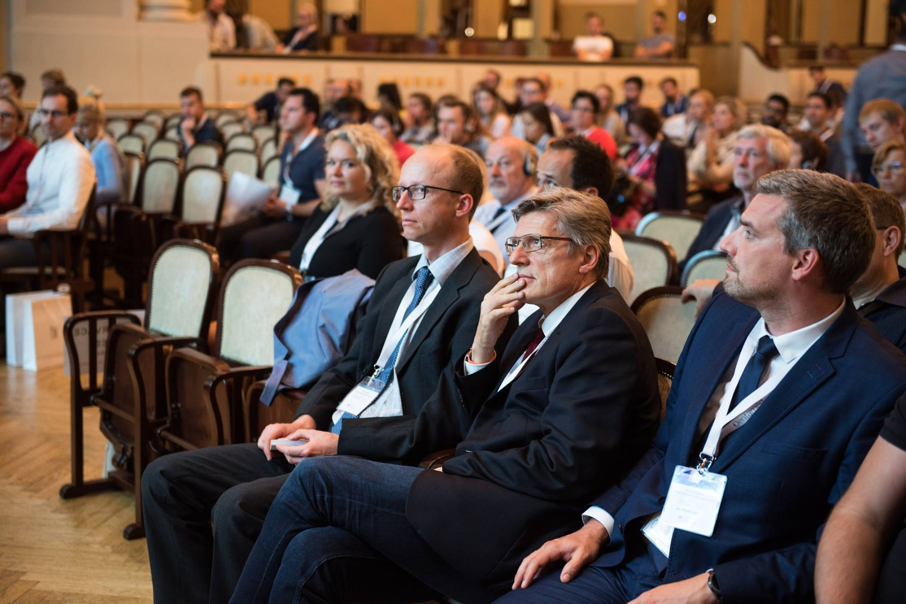

Registrace otevřena
Od MTA k biokeramickým sealerům
prof. Josette Camilleri
- 19. března 2027 · Praha
- 5 kreditů ČSK · simultánní tlumočení
- Člen ČES 5 000 Kč · ostatní 7 000 Kč
Člen SES 6 000 Kč

ČES · 2007–2027
Vzdělávání a sdílení zkušeností pro zubní lékaře se zájmem o endodoncii.
Vybrat vzdělávací akciRegistrace otevřena
prof. Josette Camilleri
Hlavní událost roku

Z archivu ČES · 10. kongres24.–25. září 2027
Program a registraci připravujeme.
Vzdělávejte se s kolegy, sdílejte zkušenosti a podílejte se na rozvoji endodoncie. Členství v ČES přináší také zvýhodněné vstupné na vybrané odborné akce.
Více o členství